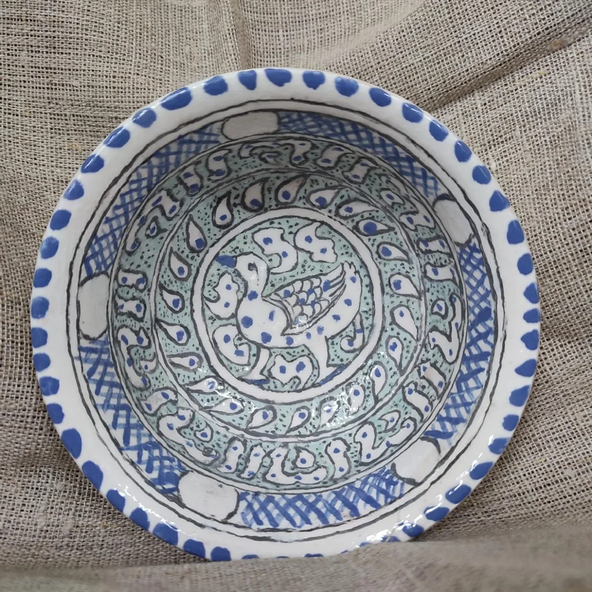
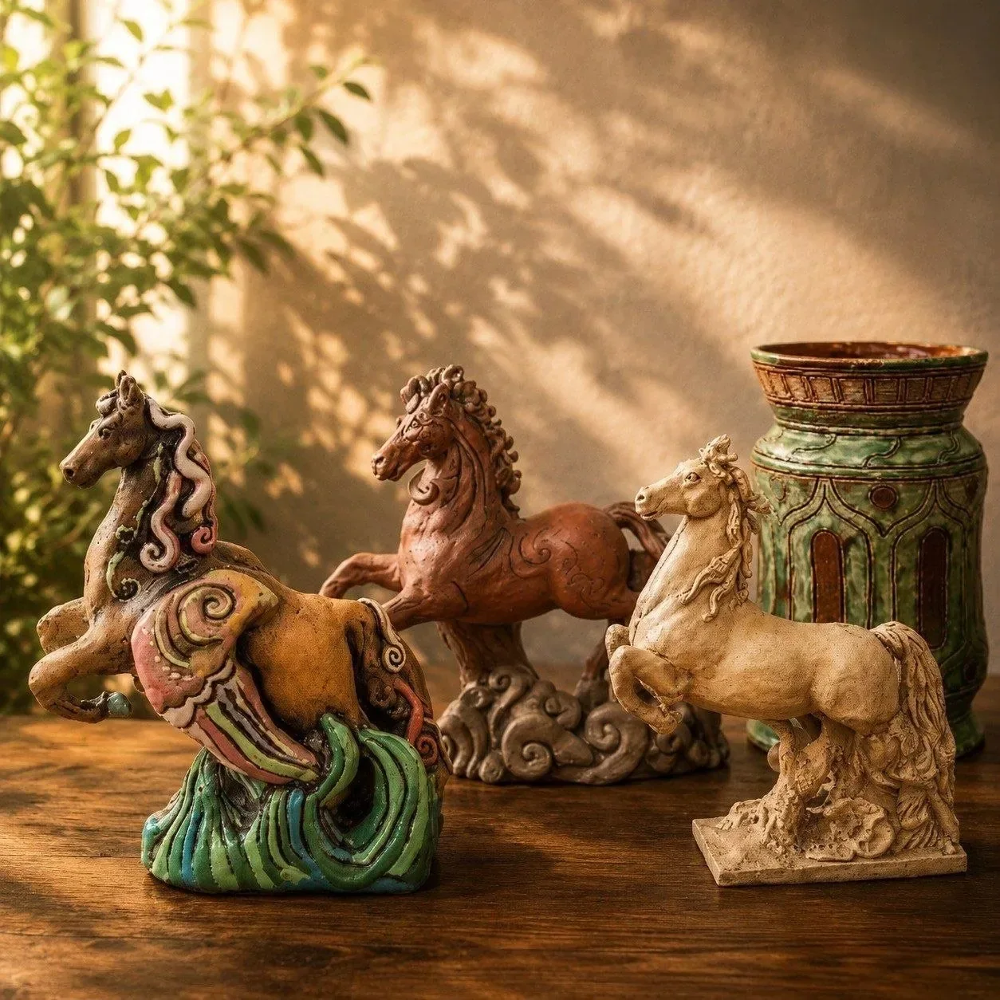

О бренде
История, к которой можно прикоснуться
Волжская Булгария, Золотая Орда и древняя Казань вдохновляют Елену Давлетшину. Она изучает старинные сосуды, орнаменты и образы животных и переносит их в современную авторскую керамику.
В мастерской создают посуду по историческим образцам, декоративные панно, фигурки, украшения и сувениры на заказ.
Познакомиться с мастеромИзделия ручной работы
Коллекция


«Атлар» и альбарелло
Кони ручной лепки и ваза с декором сграффито

«Мифический единорог»
Подсвечник ручной лепки, глазурь и эмаль

Чаша с птицей
Керамика по историческим мотивам

«Симург» и «Феникс»
Подсвечники в виде мифических птиц
Основательница мастерской
Елена Давлетшина
Художник-керамист и педагог. Елена училась декоративно-прикладному искусству в Казани, а в аспирантуре Института истории имени Марджани исследовала образы булгаро-татарской керамики эпохи Золотой Орды.
Больше двадцати лет она работает с глиной, преподаёт и создаёт авторские изделия. С июня 2026 года Елена — резидент Центра уникального мастерства в Казани.
- 2016
- Лучший туристический сувенир Татарстана — чаша по булгарским мотивам
- 2018
- Лучший туристический сувенир Татарстана — ваза по мотивам золотоордынского сосуда
- 2019
- Победа в конкурсе «Музейный сувенир»


Для детей и взрослых
Керамика своими руками
На мастер-классах можно познакомиться с глиной, попробовать лепку или расписать керамическую заготовку. Мастерская проводит очные и онлайн-занятия.
Узнать о занятиях в ЦУМе